기계설계산업기사 (2020-06-06 기출문제)
1과목: 기계가공법 및 안전관리
1. CNC선반에서그림과 같이 A에서 B로 이동시 증분좌표계 프로그램으로 옳은것은?(오류 신고가 접수된 문제입니다. 반드시 정답과 해설을 확인하시기 바랍니다.)
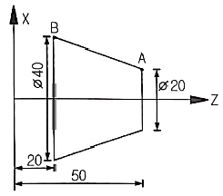
- X40.0 Z20.0 ;
- U20.0 Z20.0 ;
- U20.0 W-30.0 ;
- X40.0 W-30.0 ;
(정답률: 74%)

2. 절삭유의 사용 목적이 아닌 것은?
- 공작물 냉각
- 구성인선 발생 방지
- 절삭열에 의한 정밀도 저하
- 절삭공구의 날 끝의 온도상승 방지
(정답률: 77%)
3. 밀링 가공에서 테이블의 이송속도를 구하는 식으로 옳은 것은? (단, F는 테이블 이송속도(㎜/min), fz는 커터 1개의 날 당 이송(㎜/tooth), Z는 커터의 날수, n은 커터의 회전수(rpm), fr은 커터 1회전당 이송(㎜/rev)이다.)
- F=fz×Z
- F=fr×fz
- F= fz×fr×n
- F= fz×Z×n
(정답률: 75%)
4. 수평밀링과 유사하나 복잡한 형상의 지그, 게이지, 다이 등을 가공하는 소형 밀링머신은?
- 공구 밀링 머신
- 나사 밀링 머신
- 플레이너형 밀링 머신
- 모방 밀링 머신
(정답률: 59%)
5. 다음 연삭숫돌의 규격표시에서 ‘L’이 의미하는 것은?
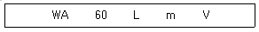
- 입도
- 조직
- 결합제
- 결합도
(정답률: 65%)
6. 배럴 가공 중 가공물의 치수 정밀도를 높이고, 녹이나 스케일 제거의 역할을 하기 위해 혼합되는 것은?
- 강구
- 맨드릴
- 방진구
- 미디어
(정답률: 56%)
7. 구성인선에 대한 설명으로 틀린 것은?
- 치핑 현상을 막는다.
- 가공 정밀도를 나쁘게 한다.
- 가공면의 표면 거칠기를 나쁘게 한다.
- 절삭공구의 마모를 크게 한다.
(정답률: 80%)
8. GC 60 K m V 1호이며 외경이 300㎜인 연삭숫돌을 사용한 연삭기의 회전수가 1700rpm이라면 숫돌의 원주 속도는 약 몇 m/min인가?
- 102
- 135
- 1602
- 1725
(정답률: 68%)
9. 게이지 블록을 취급할 때 주의사항으로 적절하지 않은 것은?
- 목재 작업대나 가죽 위에서 사용할 것
- 먼지가 적고 습한 실내에서 사용할 것
- 측정면은 깨끗한 천이나 가죽으로 잘 닦을 것
- 녹이나 돌기의 해를 막기 위하여 사용한 뒤에는 잘 닦아 방청유를 칠해 둘 것
(정답률: 79%)
10. 선반 작업에서의 안전사항으로 틀린 것은?
- 칩(chip)은 손으로 제거하지 않는다.
- 공구는 항상 정리정돈하며 사용한다.
- 절삭 중 측정기로 바깥지름을 측정한다.
- 측정, 속도변환 등은 반드시 기계를 정지한 후에 한다.
(정답률: 89%)
11. 진직도를 수치화할 수 있는 측정기가 아닌 것은?
- 수준기
- 광선정반
- 3차원측정기
- 레이저 측정기
(정답률: 57%)
12. 수평식 보링머신의 분류가 아닌 것은?
- 베드형
- 플로우형
- 테이블형
- 플레이너형
(정답률: 47%)
13. 범용 선반작업에서 내경 테이퍼 절삭가공 방법이 아닌 것은?
- 테이퍼 리머에 의한 방법
- 복식공구대의 회전에 의한 방법
- 테이퍼 절삭장치를 이용하는 방법
- 심압대를 편위시켜 가공하는 방법
(정답률: 50%)
14. 게이지블록 등의 측정기 측정면과 정밀기계 부품, 광학 렌즈 등의 마무리 다듬질가공 방법으로 가장 적절한 것은?
- 연삭
- 래핑
- 호닝
- 밀링
(정답률: 69%)
15. 전해연삭의 특징이 아닌 것은?
- 가공면은 광택이 나지 않는다.
- 기계적인 연삭보다 정밀도가 높다.
- 가공물의 종류나 경도에 관계없이 능률이 좋다.
- 복잡한 형상의 가공물을 변형 없이 가공할 수 있다.
(정답률: 48%)
16. 총형공구에 의한 기어절삭에 만능밀링머신의 분할대와 같이 사용되는 밀링커터는?
- 베벨 밀링커터
- 헬리컬 밀링커터
- 인벌류트 밀링커터
- 하이포이드 밀링커터
(정답률: 63%)
17. 치공구를 사용하는 목적으로 틀린 것은?
- 복잡한 부품의 경제적인 생산
- 작업자의 피로가 증가하고 안전성 감소
- 제품의 정밀도 및 호환성의 향상
- 제품의 불량이 적고 생산능력을 향상
(정답률: 86%)
18. 드릴 선단부에 마멸이 생긴 경우 선단부의 끝 날을 연삭하여 사용하는 방법은?
- 시닝(thinning)
- 트루잉(truing)
- 드레싱(dressing)
- 글레이징(glazing)
(정답률: 60%)
19. 공작기계의 종류 중 테이블의 수평길이 방향 왕복운동과 공구는 테이블의 가로 방향으로 이송하며, 대형 공작물의 평면 작업에 주로 사용하는 것은?
- 코어 보링 머신
- 플레이너
- 드릴링 머신
- 브로칭 머신
(정답률: 74%)
20. 리드 스크루가 1인치당 6산의 선반으로 1인치에 대하여
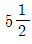
산의 나사를 깍으려고 할 때, 변환기어 값은? (단, 주동측 기어: A, 종동측 기어: C 이다.)- A: 127, C:110
- A: 130, C: 110
- A: 110, C: 127
- A: 120, C: 110
(정답률: 37%)
2과목: 기계제도
21. 다음 그림과 같은 I형강의 표기방법으로 옳은 것은? (단, L은 형강의 길이이다.)
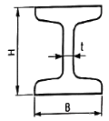
- I H×B×t×L
- I B×H×t-L
- I B×H×t×L
- I H×B×t-L
(정답률: 64%)
22. 그림과 같은 탄소강 재질의 가공품 질량은 약 몇g인가? (단, 치수의 단위는 ㎜이며, 탄소강의 밀도는 7.8g/cm3으로 계산한다.)
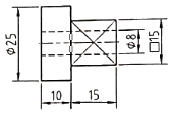
- 49.09
- 54.81
- 64.54
- 71.75
(정답률: 45%)
23. 다음 기하공차 중에서 자세 공차를 나타내는 것은?
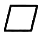
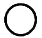
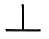
(정답률: 75%)
24. 다음 용접 기호 중 필릿 용접 기호는?
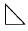
(정답률: 79%)
25. 다음 중 토우를 매끄럽게 하라는 용접부 및 용접부 표면의 보조기호는?
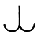
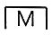
(정답률: 67%)
26. 구멍의 치수가  이고, 축의 치수가
이고, 축의 치수가
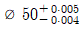
일 때 최대틈새는?- 0.004
- 0.0⑤
- 0.008
- 0.009
(정답률: 85%)
27. 그림의 기호가 의미하는 표면의 무늬결의 지시에 대한 설명으로 옳은 것은?
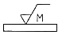
- 표면의 무늬결이 여러 방향이다.
- 표면의 무늬결 방향이 기호가 사용된 투상면에 수직이다.
- 기호가 적용되는 표면의 중심에 관해 대략적으로 원이다.
- 기호가 사용되는 투상면에 관해 2개의 경사 방향에 교차한다.
(정답률: 77%)
28. KS재료 기호 명칭 중에서 “SF340A”로 나타나는 재질의 명칭은?
- 냉간 압연 강재
- 탄소강 단강품
- 보일러용 압연 강재
- 일반 구조용 탄소 강관
(정답률: 44%)
29. 다음과 같은 기하공차에 대한 설명으로 틀린 것은?
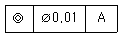
- 허용공차가 ø0.01 이내이다.
- 문자 ‘A’는 데이텀을 나타낸다.
- 기하공차는 원통도를 나타낸다.
- 지름이 여러 개로 구성된 다단축에 주로 적용하는 기하공차이다.
(정답률: 70%)
30. 그림과 같이 절단할 곳의전후를 파단선으로 끊어서 회전도시 단면도로 나타낼 때 단면도의 외형선은 어떤 선을 사용해야 하는가?
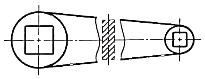
- 굵은 실선
- 가는 실선
- 굵은 1점 쇄선
- 가는 2점 쇄선
(정답률: 63%)
31. 그림과 같은 입체도에서 화살표 방향이 정면일 경우 평면도로 가장 적합한 투상도는?
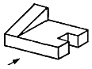
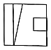
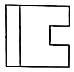
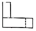
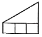
(정답률: 85%)
32. 치수를 기입할 때 기준면을 설정하여 기점기호 (○)를 사용한 후 기점기호를 기준으로 치수를 기입하는 방법은?
- 직렬 치수기입
- 병렬 치수기입
- 누진 치수기입
- 좌표 치수기입
(정답률: 67%)
33. 다음과 같은 3각법으로 그린 투상도의 입체도로 가장 옳은 것은? (단, 화살표 방향이 정면이다.)
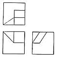
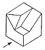
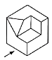
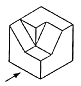
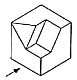
(정답률: 79%)
34. 다음 그림에서 L로 표시된 부분의 길이(㎜)는?
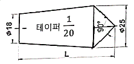
- 52.5
- 85.0
- 140.0
- 152.5
(정답률: 40%)
35. 일반적으로 그림과 같은 입체도를 제1각법과 제3각법으로 도시할 때 배열위치가 동일한 것을 모두 고른 것은?
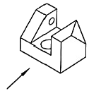
- 정면도, 배면도
- 정면도, 평면도
- 우측면도, 배면도
- 정면도, 우측면도
(정답률: 68%)
36. 그림에서 도시한 KS A ISO 6411-A4/8.5의 해석으로 틀린 것은?
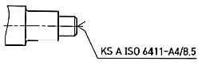
- 센터구멍의 간략 표시를 나타낸 것이다.
- 종류는 A형으로 모따기가 있는 경우를 나타낸다.
- 센터 구멍이 필요한 경우를 나타내었다.
- 드릴 구멍의 지름은 4mm, 카운터싱크 구멍지름은 8.5mm이다.
(정답률: 60%)
37. 베어링 호칭 번호가 6301인 구름베어링의 안지름은 몇 ㎜인가?
- 10
- 11
- 12
- 15
(정답률: 72%)
38. 다음 중 무하중 상태로 그려지는 스프링이 아닌 것은?
- 접시 스프링
- 겹판 스프링
- 벌류트 스프링
- 스파이럴 스프링
(정답률: 55%)
39. 그림과 같은 KS 용접기호의 명칭은?
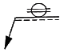
- 플러그 용접
- 점 용접
- 이면 용접
- 심 용접
(정답률: 57%)
40. 다음 제3각법으로 투상된 도면 중 잘못된 투상도가 포함된 것은?
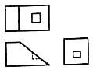
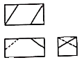
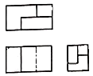
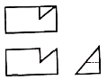
(정답률: 59%)
3과목: 기계설계 및 기계재료
41. 7:3황동에 Sn을 1% 첨가한 것으로 전연성이 우수하여 관 또는 판을 만들어 증발기와 열교환기 등에 사용되는 것은?
- 에드미럴티 황동
- 네이벌 황동
- 알루미늄 황동
- 망간 황동
(정답률: 64%)
42. 18-8형 스테인리스강의 특징에 대한 설명으로 틀린 것은?
- 합금성분은 Fe를 기반으로 Cr 18%, Ni 8%이다.
- 비자성체이다.
- 오스테나이트계이다.
- 탄소를 다량 첨가하면 피팅 부식을 방지할 수 있다.
(정답률: 55%)
43. 주철을 파면에 따라 분류할 때 해당되지 않는 것은?
- 회주철
- 가단주철
- 반주철
- 백주철
(정답률: 50%)
44. 다음 중 열처리에서 풀림의 목적과 가장 거리가 먼 것은?
- 조직의 균질화
- 냉간 가공성 향상
- 재질의 경화
- 잔류 응력 제거
(정답률: 55%)
45. 열가소성 재료의 유동성을 측정하는 시험방법은?
- 뉴턴 인덱스법
- 멜트 인덱스법
- 캐스팅 인덱스법
- 샤르피 시험법
(정답률: 65%)
46. 0.4%C의 탄소강을 950℃로 가열하여 일정시간 충분히 유지시킨 후 상온까지 서서히 냉각시켰을 때의 상온 조직은?
- 페라이트 + 펄라이트
- 페라이트 + 소르바이트
- 시멘타이트 + 펄라이트
- 시멘타이트 + 소르바이트
(정답률: 53%)
47. 다공질 재료에 윤활유를 흡수시켜 계속해서 급유하지 않아도 되는 베어링 합금은?
- 켈밋
- 루기메탈
- 오일라이트
- 하이드로날륨
(정답률: 72%)
48. 다음 중 소결경질합금이 아닌 것은?
- 위디아(Widia)
- 탕갈로이(Tungaloy)
- 카보로이(Carboloy)
- 코비탈륨(Cobitalium)
(정답률: 57%)
49. Fe에 Ni이 42~48%가 합금화된 재료로 전등의 백금선에 대용되는 것은?
- 콘스탄탄
- 백동
- 모넨메탈
- 플래티나이트
(정답률: 42%)
50. 순철의 변태에서 α-Fe이 γ-Fe로 변화하는 변태는?
- A1 변태
- A2 변태
- A3 변태
- A4 변태
(정답률: 59%)
51. 어떤 블록 브레이크 장치가 5.5kW의 동력을 제동할 수 있다. 브레이크 블록의 길이가 80㎜, 폭이 20㎜라면 이 브레이크의 용량은 몇 MPa×m/s인가?
- 3.4
- 4.2
- 5.9
- 7.3
(정답률: 31%)
52. 45kN의 하중을 받는 엔드 저널의 지름은 약 몇 ㎜인가? (단, 저널의 지름과 길이의 비
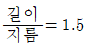
이고, 저널이 받는 평균압력은 5MPa이다.)- 70.9
- 74.6
- 77.5
- 82.4
(정답률: 39%)
53. 기어 절삭에서 언더컷을 방지하기 위한 방법으로 옳은 것은?
- 기어의 이 높이를 낮게, 압력각은 작게한다.
- 기어의 이 높이를 낮게, 압력각은 크게한다.
- 기어의 이 높이를 높게, 압력각은 작게한다.
- 기어의 이 높이를 높게, 압력각은 크게한다.
(정답률: 61%)
54. 회전수 1500rpm, 축의 직경110㎜인 묻힘키를 설계하려고 한다. 폭이 28㎜, 높이가 18㎜, 길이가 300㎜일 때 묻힘키가 전달할 수 있는 최대 동력(kW)은? (단, 키의 허용전단응력 τa=40MPa이며, 키의 허용전단응력만을 고려한다.)
- 933
- 1265
- 2903
- 3759
(정답률: 38%)
55. 8m/s의 속도로 15kW의 동력을 전달하는 평벨트의 이완측 장력(N)은? (단, 긴장측의 장력은 이완측 장력의 3배이고, 원심력은 무시한다.)
- 938
- 1471
- 1961
- 2942
(정답률: 23%)
56. 나사의 종류 중 먼지, 모래 등이 나사산 사이에 들어가도 나사의 작동에 별로 영향을 주지 않으므로 전구와 소켓의 결합부, 또는 호스의 이음부에 주로 사용되는 나사는?
- 사다리꼴나사
- 톱니나사
- 유니파이 보통나사
- 둥근나사
(정답률: 69%)
57. 축을 형상에 따라 분류할 경우 이에해당되지 않는 것은?
- 크랭크축
- 차축
- 직선축
- 유연성축
(정답률: 46%)
58. 외경 10cm, 내경 5cm의 속빈 원통이 축방향으로 100kN의 인장 하중을 받고있다. 이 때 축 방향 변형률은? (단, 이 원통의 세로탄성계수는 120GPa이다.)
- 1.415×10-4
- 2.415×10-4
- 1.415×10-3
- 2.415×10-3
(정답률: 32%)
59. 용접이음의 단점에 속하지 않는 것은?
- 내부 결함이 생기기 쉽고 정확한 검사가 어렵다.
- 다른 이음작업과 비교하여 작업 공정이 많은 편이다.
- 용접공의 기능에 따라 용접부의 강도가 좌우된다.
- 잔류응력이 발생하기 쉬워서 이를 제거하는 작업이 필요하다.
(정답률: 70%)
60. 스프링 종류 중 하나인 고무 스프링(rubber spring)의 일반적인 특징에 관한 설명으로 틀린 것은?
- 여러 방향으로 오는 하중에 대한 방진이나 감쇠가 하나의 고무로 가능하다.
- 형상을 자유롭게 선택할 수 있고, 다양한 용도로 적용이 가능하다.
- 방진 및 방음 효과가 우수하다.
- 저온에서의 방진 능력이 우수하여 -10°C이하의 저온저장고 방진장치에 주로 사용된다.
(정답률: 66%)
4과목: 컴퓨터응용설계
61. 미리 정해진 내용의 문자나 숫자들을 컴퓨터가 인식할 수 있도록 정한 후 사람의 글씨 또는 인쇄된 문자를 스캔하여 컴퓨터에 문자를 인식시키는 입력장치는?
- CRT
- MICR
- OCR
- OMR
(정답률: 51%)
62. 다음 중 원추면을 하나의 평면으로 절단할 때 얻을 수 있는 원추곡선을 모두 고른 것은?
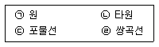
- ㉡, ㉣
- ㉠, ㉡, ㉣
- ㉡, ㉢, ㉣
- ㉠, ㉡, ㉢, ㉣
(정답률: 67%)
63. NC 데이터에 의한 NC 가공작업이 쉬운 모델링은?
- 와이어 프레임 모델링
- 서피스 모델링
- 솔리드 모델링
- 윈도우 모델링
(정답률: 53%)
64. 타원
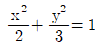
에 접하고 기울기가 1인 직선의 방정식은?- y=x±√5
- y=x±√7
- y=x±√11
- y=x±√13
(정답률: 42%)
65. 다음 중 기본적인 2차원 동차 좌표변환으로 볼 수 없는 것은?
- 압출(extrusion)
- 이동(translation)
- 회전(rotation)
- 반사(reflection)
(정답률: 64%)
66. (x, y)좌표 기반의 2차원 평면에서 정의되는 직선의 방정식에서 기울기의 절대값이 가장 큰 것은?
- 수평축에서 135도 기울어져 있는 직선
- x축 절편이 3, y축 절편이 15인 직선
- 점 (10,10), (25,55)을 지나는 직선
- 직선의 방정식이 4y=2x+7인 직선
(정답률: 52%)
67. 다음 출력장치 중 래스터 스캔 방식으로 운영되는 장치가 아닌 것은?
- 정전식 플로터
- 레이저 프린터
- 잉크젯 플로터
- 평판 플로터
(정답률: 43%)
68. 모델형상의 실제 기하학적 크기는 변화 없이 화면상의 출력 이미지에 대한 시각적인 확대 또는 축소가 이루어지는 것은?
- Panning
- Clipping
- Zooming
- Grouping
(정답률: 82%)
69. 원기둥을 3가지 3차원 형상 모델(CSG, B-rep, Voxel)로 표현할 때 요구되는 메모리 공간의 일반적인 크기의 비교로 옳은 것은?
- B-rep > CSG > Voxel
- B-rep > Voxel > CSG
- Voxel > CSG > B-rep
- Voxel > B-rep > CSG
(정답률: 46%)
70. 다음 중 knot 벡터를 사용하여 국부적인 변형이 가능한 곡선은?
- Bezier 곡선
- B-spline 곡선
- Ferguson 곡선
- 음함수 곡선
(정답률: 52%)
71. B-spline 곡선을 다양하게 변형할 수 있는 non-uniform한 곡선을 무엇이라고 하는가?
- Beizer 곡선
- Spline 곡선
- NURBS 곡선
- Coons 곡선
(정답률: 57%)
72. 3D CAD 데이터를 사용하여 레이아웃이나 조립성 등을 평가하기 위하여 컴퓨터상에서 부품을 설계하고 조립체를 생성하는 것은?
- rapid prototyping
- digital mock-up
- part programming
- reverse engineering
(정답률: 56%)
73. CAD(Computer-Aided Design) 소프트웨어의 가장기본적인 역할은?
- 기하 형상의 정의
- 해석결과의 가시화
- 유한요소 모델링
- 설계물의 최적화
(정답률: 60%)
74. 다음과 같은 원추곡선(conic curve) 방정식을 정의하기 위해 필요한 구속조건의 수는?
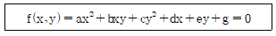
- 3개
- 4개
- 5개
- 6개
(정답률: 54%)
75. 반지름 3, 중심점 (6, 7)인 원을 반지름 6, 중심점 (8, 4)의 원으로 변환하는 변환행렬로 알맞은 것은? (단, 변환 전과 후 원상의 점좌표는 동차좌표를 사용하여 각각
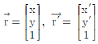
로 표시된다.)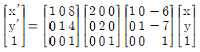
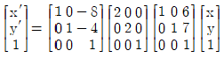
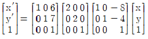
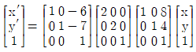
(정답률: 29%)
76. 다음은 컴퓨터를 구성하는 장치의 5대 요소에 의한 기본적인 정보처리과정을 나타낸 것이다. ( A )안에 들어갈 것으로 옳은것은?
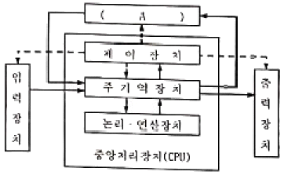
- 인터페이스(interface)
- 보조 기억 장치(auxiliary memory)
- 부호기(encoder)
- 마이크로프로세서(microprocessor)
(정답률: 76%)
77. Beizer 곡선방정식의 특징으로서 적당하지 않은 것은?
- 생성되는 곡선은 조정 다각형의 시작점과 끝점을 반드시 통과해야 한다.
- 조정 다각형의 첫째 선분은 시작점의 접선벡터와 같은 방향이고, 마지막 선분은 끝점의 접선벡터와 같은 방향이다.
- 조정 다각형의 꼭짓점의 순서를 거꾸로 하여 곡선을 생성하여도 같은 곡선을 생성하여야 한다.
- 꼭짓점의 한 곳이 수정될 경우그 점을 중심으로 일부만 수정이 가능하므로 곡선의 국부적인 조정이 가능하다.
(정답률: 56%)
78. 기하학적 형상(geometric model)을 표현하는 방법 중 점, 직선, 곡선만으로 3차원 형상을 표현하는 것은?
- 와이어 프레임 모델링
- 라인 모델링
- shaded 모델링
- 서피스 모델링
(정답률: 69%)
79. 솔리드 모델이 저장되는 데이터 자료구조의 종류로서 적당하지 않은 용어는?
- CSG 트리 구조
- half-edge 데이터 구조
- winged-edge 데이터 구조
- Polyhedron 데이터 구조
(정답률: 49%)
80. B-rep 모델링 방식의 특성이 아닌 것은?
- 화면 재생시간이 적게 소요된다
- 3면도, 투시도, 전개도 작성이 용이하다.
- 데이터의 상호 교환이 쉽다.
- 입체의 표면적 계산이 어렵다.
(정답률: 52%)